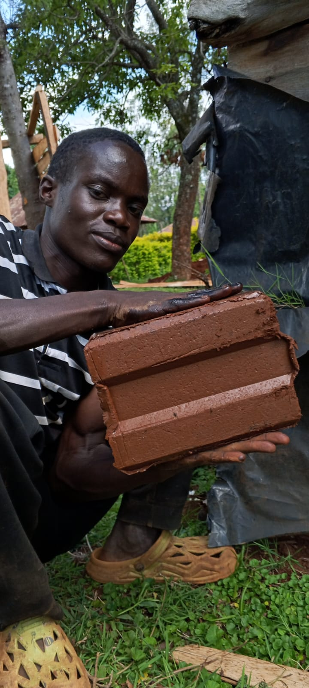
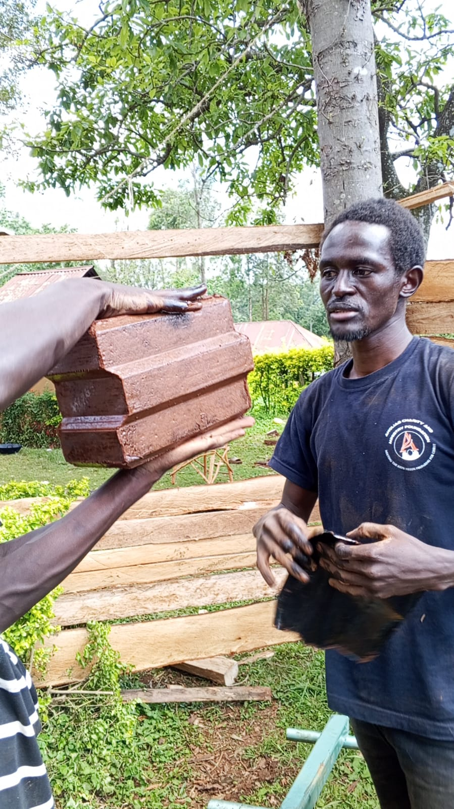
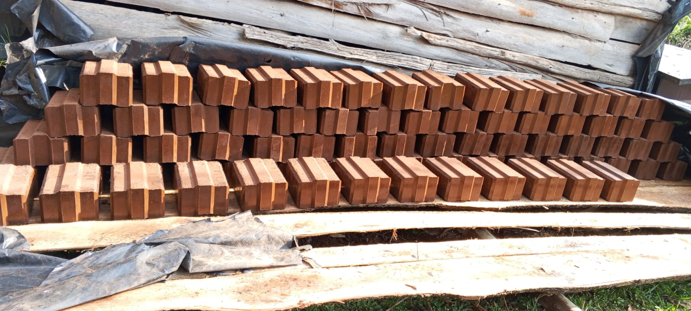
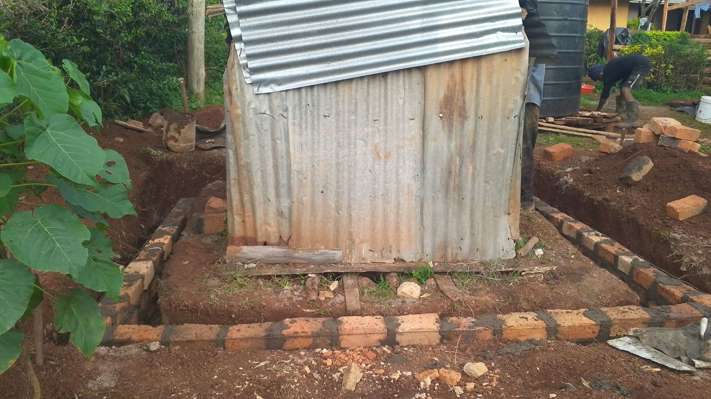
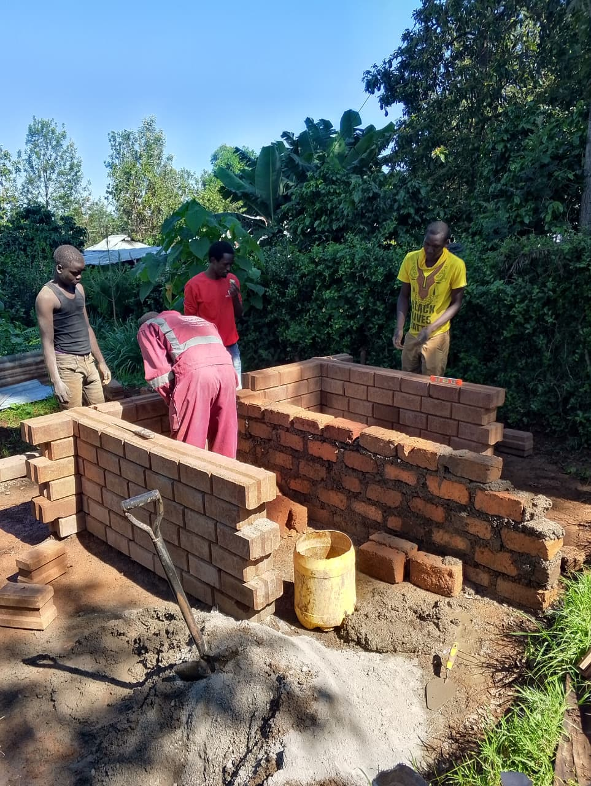
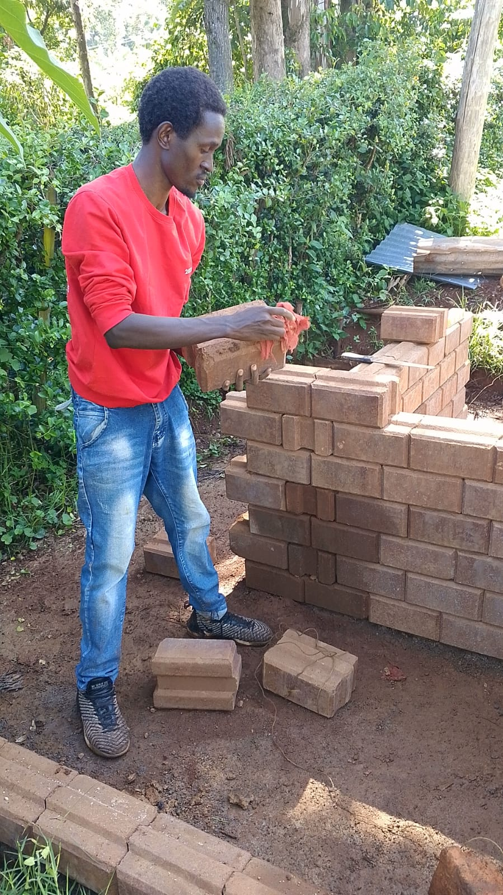
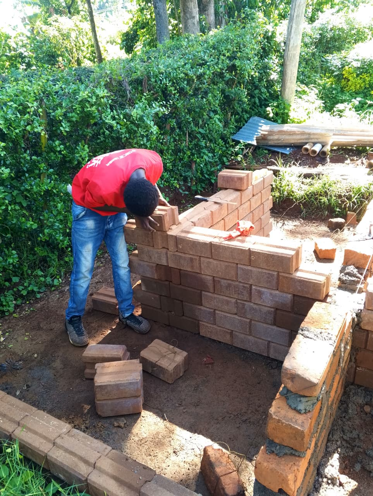

Blocks of Change
From raw earth to rising walls — and what it means
to build when everything is at stake.

There is something clarifying about working with your hands in the soil. No abstraction. No delay between intention and action. You press the earth, the block emerges, and you know — with your whole body — that something real just happened.
This is the story of a latrine revamp in Kisii. But it is also the story of something much larger. It is a story about what it means to build when you believe that how a people live determines whether they can stand.
The Block Itself
We used ISSBs — Interlocked Stabilised Soil Blocks. Pressed from the same red earth that surrounds us here in Kisii, stabilised just enough to hold, and interlocked so that mortar becomes nearly unnecessary. They are strong, affordable, and deeply local. In a world that imports everything, there is a quiet radicalism in building with what the ground beneath you already provides.
The press is simple. You load the moist soil, you pull the lever, and the machine does its work. What comes out is a precision block — uniform, dense, and ready to build with. The earth you walked on yesterday becomes the wall you sleep within tomorrow.



▶ Watch the block press in action — soil in, structure out.
The Project: A Latrine Revamped
The immediate project was practical — revamping an old latrine structure using ISSB blocks. The old structure, patched together from rusted iron and crumbling masonry, had served its time. It needed to be retired with dignity and replaced with something that reflected a new standard of care — for the body, for the space, for the people who use it.
Sanitation is not a glamorous subject. But in the theology of true health reform, dignity in the most private spaces is inseparable from the flourishing of the whole person. You cannot have a sanitarium without first having a latrine that treats people as worthy of design.


The Team
No meaningful structure is built alone. This work was done with a team — men who showed up, got their hands into the earth, and laid block after block with the kind of quiet focus that good work requires. There is a dignity in that. A craft. A brotherhood.
This is also part of the vision. Solvēnce Home is not a solo project. It is a training ground. Every person who joins a build site like this one learns something they cannot unlearn — that they are capable, that their hands can shape the world, that they do not need to wait for someone else to build what they need.


Why This Matters
We stand at a threshold. A time is coming — is already here in many ways — when the systems people have relied upon will not hold. The economy, the food supply, the structures of community — these are more fragile than they appear. And a people who have outsourced everything — their food, their shelter, their thinking — will not be able to stand in that hour.
The work of Solvēnce Home is to build the opposite kind of people. People who know how to press a block from the earth beneath them. Who know how to lay a course level and plumb. Who know how to grow food, preserve it, and share it. Who have learned, in the small theatre of a construction site or a garden bed, what it means to be faithful, patient, and skilled.
The blocks of this latrine are small. The project is humble. But every project like this one is a rehearsal for something larger — the community we are building toward, the sanitarium, the food forest, the tiny homes on the Isinya land. Each pressed block is a quiet declaration: we are becoming the people who can stand.
What Comes Next
The latrine revamp is one step. The next steps are already in motion — more builds, more blocks, more stories. A tiny home on wheels is being designed. Land in Isinya is waiting. A permaculture farm is being sketched. And through all of it, the documentation continues — so that this journey can become a resource for others who sense the same urgency and are asking the same question:
How do I become the kind of person who can stand?
The answer, it turns out, starts with pressing a block from the earth and laying it true.